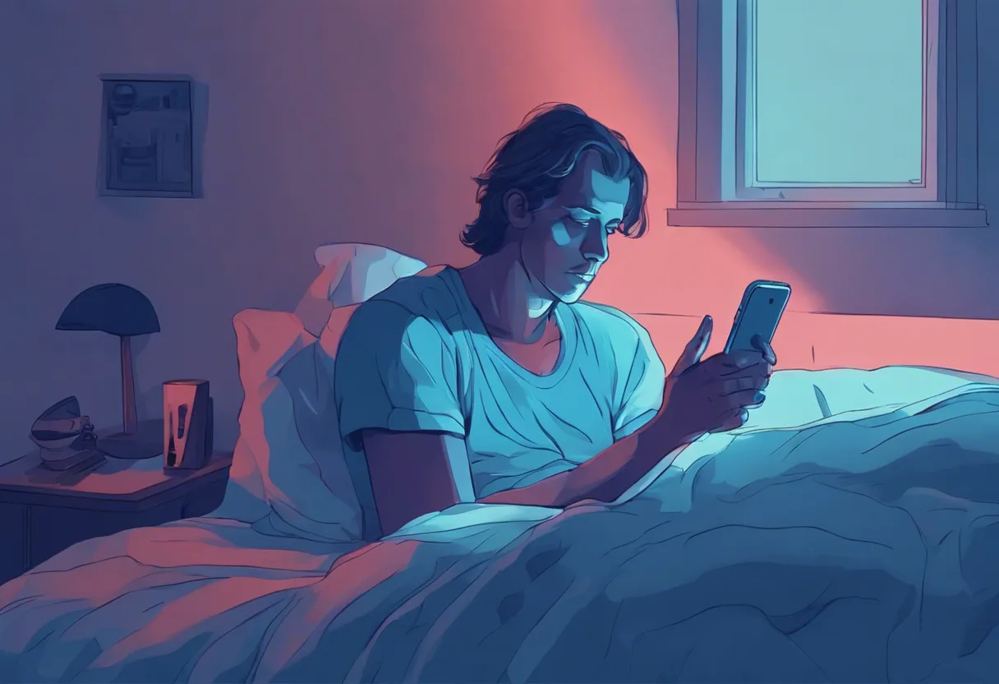

Understanding Blue Light:
What Is It & Why Does It Matter
Blue light is a high-energy, short-wavelength light that comes not only from the sun but also from screens, LED lights, and digital devices we use daily. Understanding its effects is crucial for anyone looking to protect their eyes and maintain a healthy balance with their screen time.

Blue Light and Your Eyes:
The Impact on Vision and Health
Prolonged exposure to blue light can lead to digital eye strain, disrupt sleep, and even impact long-term eye health. Research suggests that blue light exposure may increase the risk of age-related macular degeneration, a leading cause of vision loss. By adopting blue light-reducing strategies, such as screen filters and mindful device usage, individuals can help protect their eyes and support better overall health.
Tips for Healthy Screen Habits
20-20-20 Rule
The 20-20-20 rule can help protect your eyes from blue light. The 20-20-20 rule suggests taking a 20-second break every 20 minutes to look at something 20 feet away, helping to relax eye muscles and reduce strain. Regular breaks like this can prevent symptoms of digital eye strain, including headaches, dryness, and blurred vision.
Blue Light Glasses
Another way to reduce blue light exposure and ease eye strain is by wearing blue light-blocking glasses. These glasses filter out some blue light from screens, which can help prevent discomfort like headaches, dry eyes, and blurred vision, especially when using devices in low-light or before bed. Although studies on their effectiveness vary, many people find them beneficial for prolonged screen time.

What You Should Know
As digital device usage continues to rise, understanding the implications of blue light on eye health is crucial. By implementing simple strategies to manage exposure, individuals can enjoy the benefits of technology while minimizing potential risks to their vision and well-being.